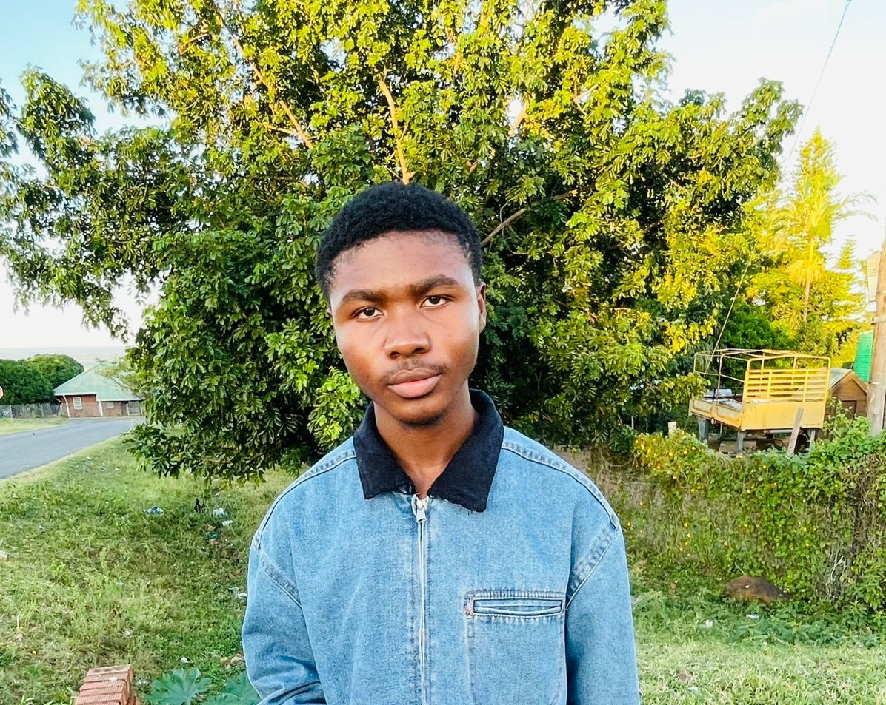

Python & problem solving
Writing clear scripts, working with data, and translating problems into logical steps.
PYTHON · AI · SOFTWARE DEVELOPMENT
Junior Python & AI Developer
Python-focused software and AI development, with practical projects shaped around real problems and the people who use them.
PDF · 104 KB
class Developer:
def __init__(self):
self.name = "Khethelo Ntsele"
self.focus = [
"Python",
"Artificial Intelligence",
"Software Development"
]
def grow(self):
return "learn → build → improve"01 / ABOUT ME

I’m a junior developer interested in the space where Python, software, and artificial intelligence meet.
I enjoy breaking a problem into manageable pieces, exploring possible solutions, and turning what I learn into useful tools. My focus is on readable code, thoughtful design, and understanding how things work.
I’m developing my skills through hands-on practice and looking for opportunities to contribute, learn from others, and build software that helps people.
02 / MY TOOLKIT
A foundation to build on.
Room to keep growing.
Writing clear scripts, working with data, and translating problems into logical steps.
Exploring data preparation, machine learning concepts, and practical AI applications.
Building responsive interfaces and learning workflows that make development easier.
03 / PROJECTS
From an idea
to a working solution.
A business-networking platform I’m currently developing to bring business discovery, connections, opportunities, and business-health insights into one dashboard. The aim is to help businesses explore useful relationships and review their activity in a shared workspace.
Project focus: Making it easier for businesses to find relevant connections and opportunities, with business-health assessments based on validated evidence.
04 / EDUCATION & LEARNING
Building a strong foundation through consistent practice and hands-on learning.
Strengthening problem solving, object-oriented programming, testing, and version control.
Learning how data, algorithms, and evaluation come together to create useful applications.
HyperionDev, in partnership with Stellenbosch University
I am currently completing a programme focused on practical skills in Python, software development, artificial intelligence, problem solving, and building real-world software projects.
05 / CONTACT
Have a junior developer opportunity, a project idea, or a question?
I’d love to hear from you.
Kntsele75@gmail.com